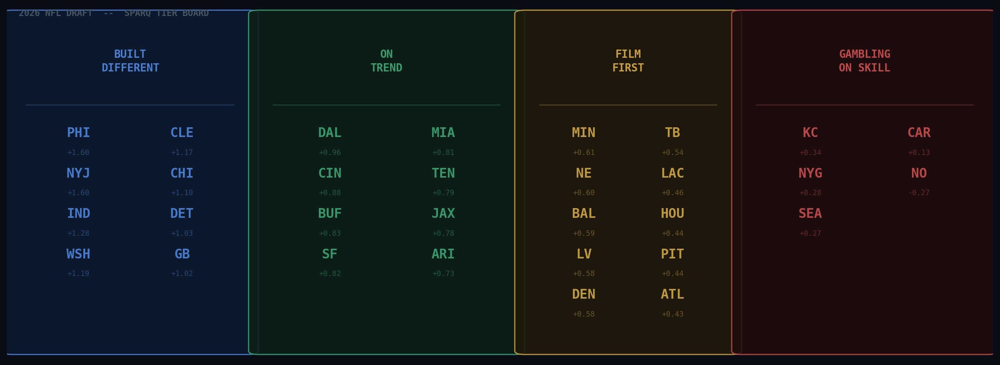
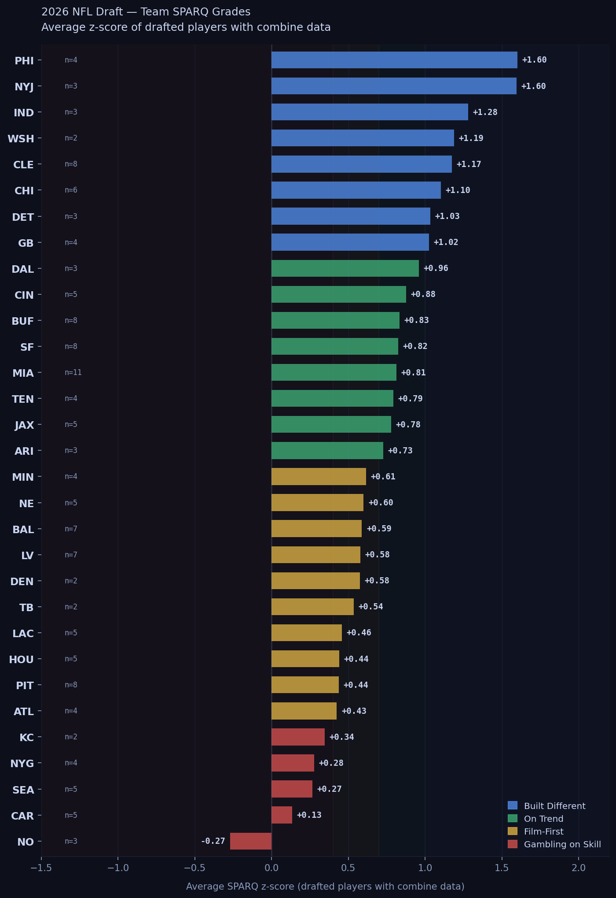
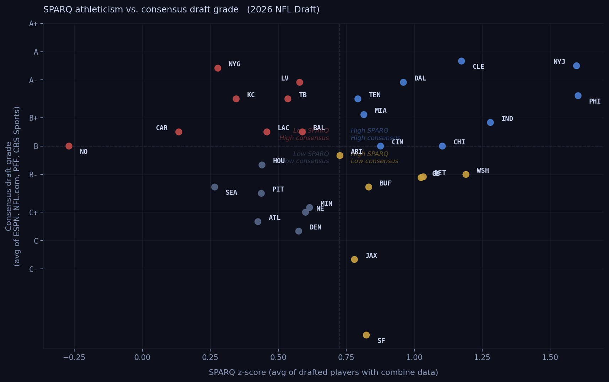
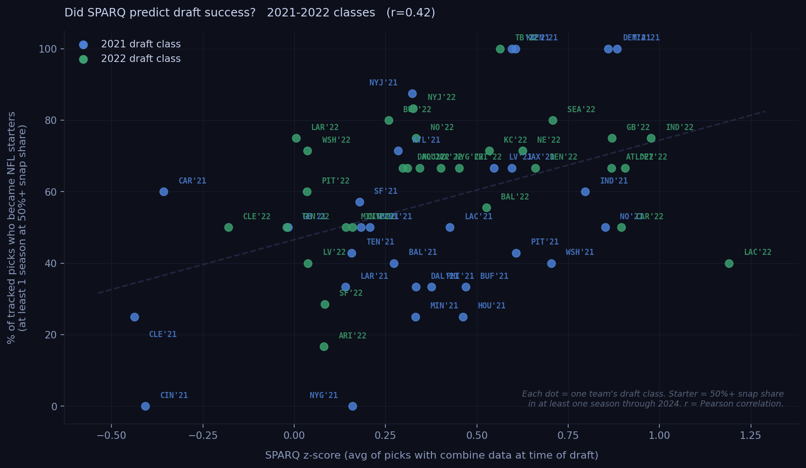

We ran the SPARQ numbers on all 257 picks. Here's where every team stands.
The tape evaluation is done. The war rooms are empty. Now comes the part where everyone argues about who won the draft — usually based on vibes, positional needs, and whatever the local beat reporter thinks.
Here's a different cut: which teams actually drafted athletes?
We pulled SPARQ z-scores for every player in the 2026 draft class and averaged them by team. SPARQ combines seven combine metrics — speed, explosion, strength, agility — into a single number adjusted by position. A z-score of zero is exactly average for the position. Positive means above average. Negative means below.
One caveat up front: 36% of drafted players don't have SPARQ data, either because they skipped the combine, didn't test in every drill, or came from programs with limited pro day tracking. Teams with mostly null-SPARQ classes are harder to evaluate — we note sample sizes throughout. The full methodology is in our first post.

Average SPARQ z-score of drafted players with combine data, 2026 NFL Draft. Minimum 2 scored picks. LAR excluded (1 scored pick).
We compared our SPARQ rankings to letter grades from four major outlets: ESPN, NFL.com, PFF, and CBS Sports. We converted their letter grades to a numeric scale (A+=4.3, A=4.0, down to D=1.0) and averaged across sources.
The scatter plot below puts every team in one of four quadrants: high-SPARQ/high-consensus (blue), high-SPARQ/low-consensus (amber), low-SPARQ/high-consensus (red), and both low (gray).

Each dot is one team. Quadrant lines are median splits. Grades sourced from ESPN, NFL.com, PFF, and CBS Sports; teams with fewer than 2 grading sources excluded.
The most common outcome is agreement — most teams that drafted athletically got good reviews, and vice versa. But the outliers are where it gets interesting.
Where SPARQ and scouts agreed: Cleveland and the Jets both scored high on athleticism and earned strong consensus grades. Dallas and Cincinnati are in the same quadrant. The combine data and the scouts are telling the same story for these teams.
Where scouts liked it but SPARQ didn't: New York Giants drew A grades across all four outlets. Their SPARQ average is +0.28 — 28th in the league. Las Vegas got unanimous A-minus grades; SPARQ puts them at +0.58, Film-First territory. Kansas City earned A-range grades from most outlets; SPARQ says +0.35. These teams drafted for scheme fit over athleticism — a legitimate strategy, but a bet on film winning out over physical projection.
Where SPARQ liked it but scouts didn't: San Francisco's SPARQ average is +0.82 across all eight scored picks — the only team with zero missing data. PFF graded them a D, the only outlet with a grade. That gap is worth watching in 2027 and 2028. Jacksonville sits in the same quadrant: SPARQ says On Trend (+0.78), PFF gave them D+ and CBS C+.
One caveat: consensus grades weigh scheme fit, positional need, and draft-value considerations that SPARQ doesn't. The two measures ask different questions. Neither is complete on its own.
Built Different · z > 1.0
These eight teams drafted players who test in the top third of NFL athletes at their positions.
Philadelphia Eagles — +1.60 (n=4 scored picks)
The Eagles lead the board, though with four scored picks out of seven total, read this number carefully. Philadelphia's front office has a long track record of prioritizing athletic ceilings — this draft continues that pattern.
New York Jets — +1.60 (n=3 scored picks)
Essentially tied with Philly, driven heavily by Kenyon Sadiq (z=+2.95, 99.8th percentile) — the highest SPARQ score of anyone taken in the 2026 draft. Three scored picks out of eight means the Jets' number is volatile. What's not volatile: Sadiq is a genuinely rare athlete.
Cleveland Browns — +1.17 (n=8 scored picks)
Cleveland is the team you should actually trust at the top of this list. Eight scored picks with only two nulls is the best data quality of any team in the top ten. The Browns didn't just get lucky with one elite tester — they built an athletically consistent class across multiple rounds.
Indianapolis Colts — +1.28 (n=3) | Washington Commanders — +1.19 (n=2)
Both strong numbers, both small samples. Washington's two scored picks include Sonny Styles at z=+2.34. Treat these as directionally interesting rather than conclusive.
Chicago Bears — +1.10 (n=6 scored picks)
Chicago rounds out this tier with the second-best data quality in the group. Six scored picks, one null. The Bears drafted athletes up and down the board.
Detroit Lions — +1.03 (n=3) | Green Bay Packers — +1.03 (n=4)
Both NFC North teams clear the threshold. Detroit, Green Bay, and Chicago all land in the top eight — the NFC North quietly built itself into the most athletically-drafted division in 2026.
On Trend · z 0.70 to 1.0
Eight teams drafted above-average athletes. This is where most well-run front offices land in any given year.
Dallas Cowboys — +0.96 | Cincinnati Bengals — +0.88 | Buffalo Bills — +0.83
All three have enough scored picks to trust. Buffalo's eight scored picks (one null) give them the most reliable number in this tier.
San Francisco 49ers — +0.82 (n=8, zero nulls)
SF is the only team in the entire draft with a fully measured class — eight scored picks, zero missing data. Their number is exactly what it says: a clean, above-average athletic class across the board.
Miami Dolphins — +0.82 (n=11 scored picks)
Miami made 13 picks and 11 have data. Large, well-measured class that consistently tested above average.
Tennessee Titans — +0.79 | Jacksonville Jaguars — +0.78 | Arizona Cardinals — +0.73
All solidly above average. Tennessee's number is clouded by four nulls in an eight-pick class.
Film-First · z 0.40 to 0.70
Ten teams landed here. These front offices drafted players whose film justified the pick regardless of testing. Some of this is philosophy; some is position — quarterbacks and offensive linemen test more variably.
Minnesota Vikings — +0.62 | New England Patriots — +0.60 | Baltimore Ravens — +0.59
Measured, competent classes without standout athletes. Baltimore's four nulls in an eleven-pick class mean part of their class is untested.
Las Vegas Raiders — +0.58 | Denver Broncos — +0.58
Denver's number comes from just two scored picks in a six-pick class — treat with caution.
Los Angeles Chargers — +0.46 | Houston Texans — +0.44 | Pittsburgh Steelers — +0.44 | Atlanta Falcons — +0.43
Pittsburgh's eight scored picks and one null give them the most reliable Film-First number. The Steelers drafted solid athletes — just not elite ones.
Gambling on Skill · z below 0.40
Five teams drafted classes that tested below the league average once you account for position. Whether that's a problem depends entirely on what they saw on film.
Kansas City Chiefs — +0.35 (n=2, five nulls)
The Chiefs' number is the least reliable in the bottom tier — two scored picks out of seven total. What we can say: the picks we can measure averaged below-average testing.
New York Giants — +0.28 (n=4) | Seattle Seahawks — +0.27 (n=5)
Seattle is one of only two teams with zero nulls — five scored picks, all measured, all below average. This isn't a data problem. The Seahawks drafted a below-average athletic class and we can say that with confidence.
Carolina Panthers — +0.13 (n=5)
Lowest of the reasonably-measured teams. Monroe Freeling (OT, z=+1.60) is the bright spot. The rest of the class tested poorly.
New Orleans Saints — -0.27 (n=3, five nulls)
The only team with a negative average. Three scored picks in an eight-pick class. New Orleans is the outlier.
Los Angeles Rams — not ranked
One scored pick out of four total. Insufficient data.
Before you take our 2026 rankings at face value, here's the obvious question: does team-level SPARQ actually predict draft success?
We ran the same analysis on the 2021 and 2022 draft classes. For each team, we computed the average SPARQ z-score at draft time, then checked nflverse snap share data through the 2024 season to see how many of those picks became NFL starters — defined as at least one full season averaging 50% or more of their team's offensive or defensive snaps.

Each dot = one team's draft class (blue=2021, green=2022). r=0.42 across 59 team-class combinations. Tracked picks only; minimum 3 tracked picks per class to appear.
The correlation between team SPARQ average and team starter rate was r=0.42 — a real, meaningful relationship. The pattern holds in both directions.
Indianapolis's 2021 class (avg SPARQ +0.98) saw 75% of tracked picks become starters. Green Bay's 2021 class (+0.87) hit the same rate. Miami's 2021 class (+0.88) had every tracked player start at some point. At the other end, Cincinnati's 2022 class (avg SPARQ -0.41) had zero tracked picks reach starter snaps. Cleveland's lowest-SPARQ class (-0.44) converted at 25%.
Individual team numbers are noisy — each class has only five to nine tracked picks, so one player's fate moves the needle. The correlation is the story. Taken as a whole, the 59-team sample says the same thing our individual-player data says: combine testing predicts whether a pick contributes.
Three years from now, we'll run this chart for 2026. The high-SPARQ teams at the top of today's list are positioned to look good. The Gambling-on-Skill teams are betting their scouting found something the combine missed. History says that bet doesn't pay off at the team level.
A high team SPARQ average doesn't mean a good draft. It means the players selected tested well. Whether they can play is a different question, and one our database will take three to five seasons to answer properly.
What the historical data does show — from 2,340 picks across 2010 to 2020, validated on 2021 and 2022 classes — is that SPARQ predicts impact starter rates. High-SPARQ players become three-year starters at a 74% rate in the first two rounds, versus 61% for low-SPARQ players at the same draft positions. That gap holds in the middle rounds too.
Teams near the top of this list drafted more players who, historically, test like impact starters. Teams near the bottom drafted more players who, historically, test like developmental projects or backups. Film and coaching can move any individual player's outcome. The aggregate numbers don't lie.
Check back in 2029.
Data: 2026 NFL Draft, 257 total picks. SPARQ z-scores available for 173 players (64%). Scores sourced from BigBoardLab, MockDraftable, and PFF pro day tracking. Teams ranked by average z-score among players with data; minimum 2 scored picks to appear. LAR excluded (1 scored pick). Data quality varies by team — sample sizes noted throughout.